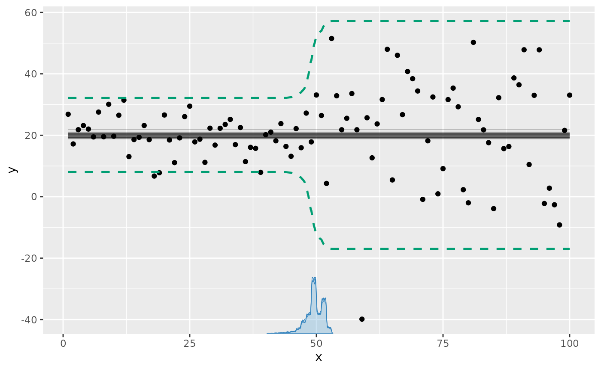
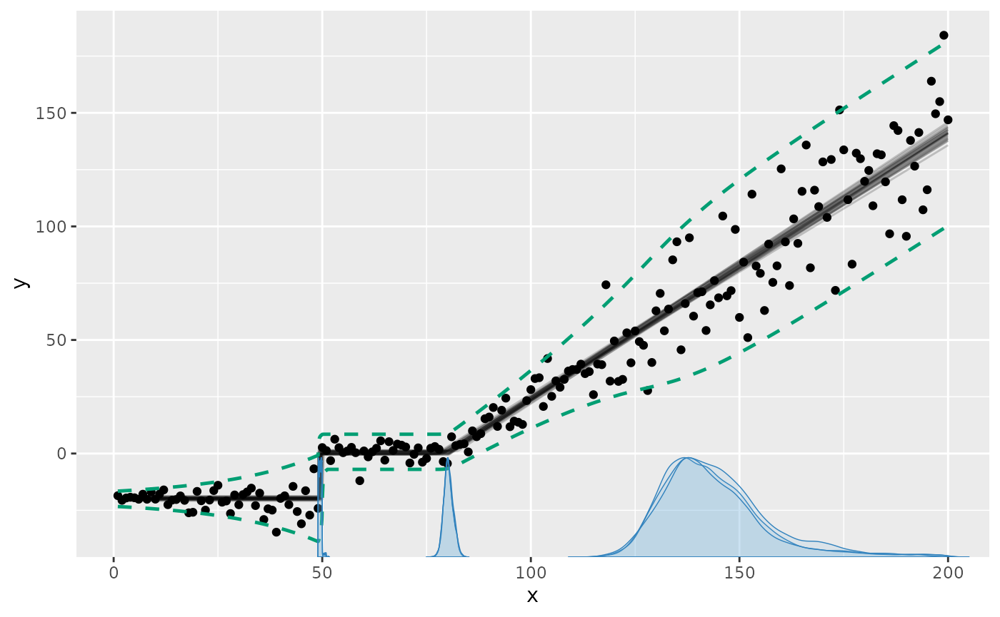
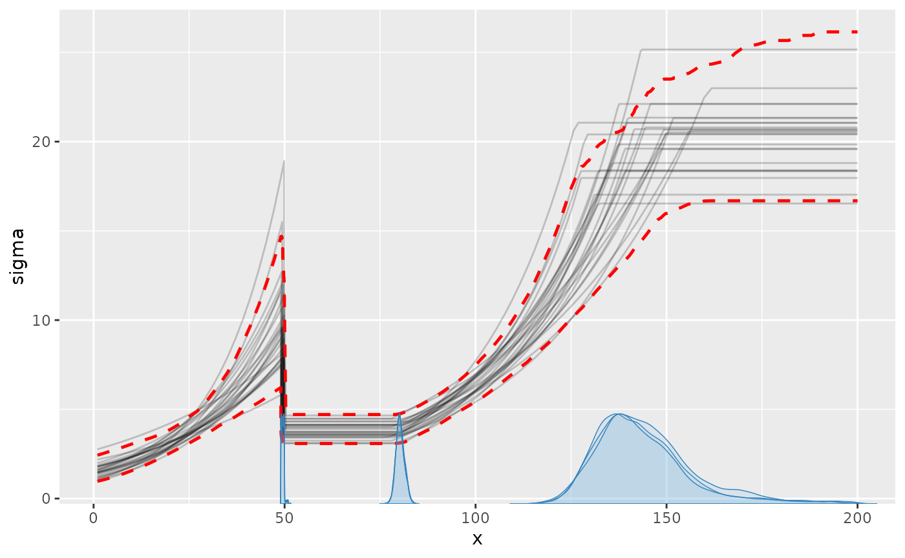
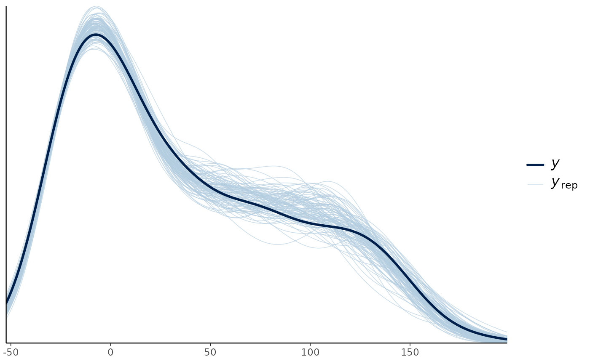
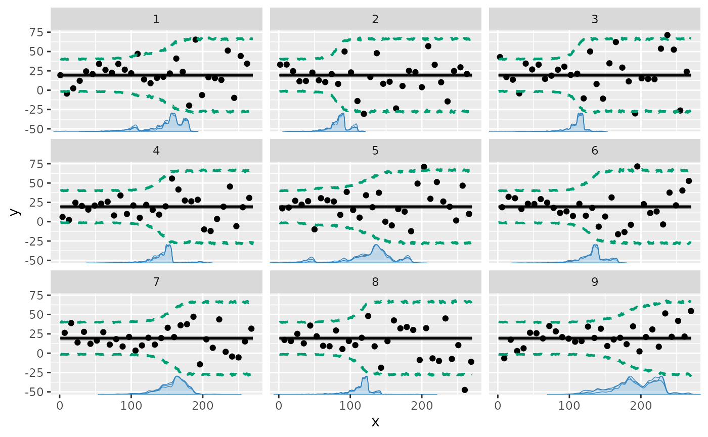
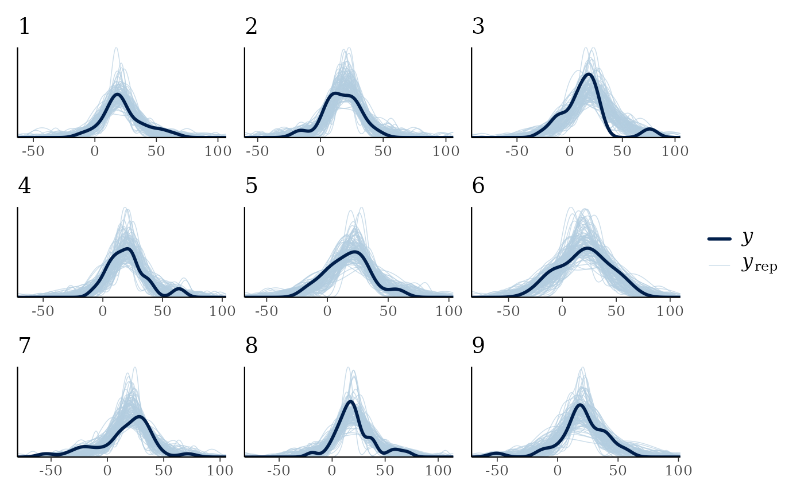

Variance change points and other distributional parameters
2026-08-30
Source:vignettes/dpar.Rmd
dpar.Rmdmcp supports distributional regression,
where any parameter of a response distribution can be regressed on
predictors and have change points across segments. In standard
regression, formulas model only the conditional mean mu().
Distributional regression extends this by allowing formulas for
distributional parameters such as residual standard deviation
(sigma), negative-binomial overdispersion
(shape) - and auxilliary parameters for time-series
autocorrelation (ar / ma).
Here, we exemplify regression on the standard deviation
sigma. A plateau mean with an increasing standard deviation
can be written as y ~ 1 + sigma(1 + x). Read more about mcp
formulas here.
Priors for distributional parameters
Aligning with brms convention, without an explicit
sigma() formula, the default is the intercept-only prior
dt(0, max(2.5, round(mad(y), 1)), 3) T(0, ) directly on the
residual SD, i.e., an identity link. The
response-calibrated scale adapts to the units of y, with a
minimum of 2.5 to avoid an accidentally narrow prior. This matches
brms.
With an explicit sigma() formula, the intercept instead
defaults to dt(0, 2.5, 3) on log-SD, with
scaled Student-t coefficient priors.
Simple example: a change in standard deviation
Let us model a simple change in residual standard deviation with a plateau mean:
library(mcp)
future::plan(future::multisession, workers = 3)
set.seed(42) # Make the script deterministic
model = list(
y ~ 1, # sigma(1) is implicit in the first segment
~ 0 + sigma(1) # a new intercept on sigma, but not on the mean
)We can simulate data with an abrupt change from a low to a high residual standard deviation at x = 50:
df = data.frame(x = 1:100, y = 1)
empty = mcp(model, data = df, sample = FALSE, par_x = "x")
set.seed(42)
df$y = empty$simulate(
empty, df,
cp_1 = 50, Intercept_1 = 20,
sigma_1 = log(5), sigma_2 = log(20))
head(df)## x y
## 1 1 26.85479
## 2 2 17.17651
## 3 3 21.81564
## 4 4 23.16431
## 5 5 22.02134
## 6 6 19.46938Now we fit the model to the simulated data.
fit = mcp(model, data = df, par_x = "x", seed = 42)We plot a posterior predictive interval to show the effect of the changing standard deviation, which is not immediately visible in the default plot of the expected response:

We can see all parameters are well recovered (compare
sim to mean). Like the other parameters, the
sigmas are named after the segment where they were
instantiated. There will always be a sigma_1.
summary(fit)## Family: gaussian
## Links: mu = identity; sigma = log
## Iterations: 3000 from 3 chains.
## Segments:
## 1: y ~ 1
## 2: y ~ 1 ~ 0 + sigma(1)
##
## Change point parameters:
## name mean sd lower upper rhat ess_bulk ess_tail sim match
## cp_1 49.8 1.58 46.4 52.3 1.00 2934 3619 50.0 OK
##
## Population-level parameters:
## name mean sd lower upper rhat ess_bulk ess_tail sim match
## Intercept_1 20.1 0.81 18.6 21.8 1.00 5284 4788 20.0 OK
## sigma_1 1.8 0.10 1.6 2.0 1.00 4839 4896 1.6 OK
## sigma_2 2.9 0.10 2.7 3.1 1.00 4898 4539 3.0 OKAdvanced example
We can model changes in sigma alone or together with
changes in the mean. The following deliberately complex model
demonstrates that flexibility:
model = list(
# Increasing standard deviation.
y ~ 1 + sigma(1 + x),
# Abrupt change in mean and standard deviation.
~ 1 + sigma(1),
# Joined slope on mean; log-SD changes as a second-order polynomial.
~ 0 + x + sigma(0 + x + I(x^2)),
# Continue slope on mean, but plateau standard deviation (no sigma() term).
~ 0 + x
)
# The slope in segment 4 is just a continuation of
# the slope in segment 3, as if there was no change point.
prior = list(
x_4 = "x_3"
)Notice a few things here:
- The prior ensures that the mean slope remains constant between
segment 3 and 4. So only
sigmachanges there. Sharing the slope through the prior effectively removes the change point in the mean (read more about priors in mcp). - Segment 4: Without a new
sigma()term, segment 4 and later segments inherit the preceding standard-deviation trajectory at the value where it was left.
In general, the log-SD parameters are named
sigma_[normalname], where “normalname” is the usual
parameter names in mcp (see more here). For example, the log-SD
slope on x in segment 3 is sigma_x_3. However,
sigma_Intercept_i is just too verbose, so log-SD intercepts
are simply called sigma_i, where i is the segment
number.
Simulate data
We simulate some data from this model, setting all parameters. As
always, we can fit an empty model to get fit$simulate,
which is useful for simulation and predictions from this model.
# Set up model
df = data.frame(x = 1:200, y = 1)
empty = mcp(model, data = df, sample = FALSE)
# Simulate data
set.seed(42)
df$y = empty$simulate(
empty, df,
cp_1 = 50, cp_2 = 100, cp_3 = 150,
Intercept_1 = -20, Intercept_2 = 0,
sigma_1 = log(3), sigma_x_1 = log(2) / 50,
sigma_2 = log(10),
sigma_x_3 = -0.03,
sigma_xE2_3 = 0.0003,
x_3 = 1, x_4 = 1)Fit it and inspect results
Fit it:
fit = mcp(model, data = df, prior = prior, warmup = 6000, iter = 10000, seed = 42)Plotting a posterior predictive interval is an intuitive way to see how the residual standard deviation is estimated:
We can also plot the sigma_ parameters directly. Now the
y-axis is sigma:

summary(fit) shows that the parameters are well
recovered and a posterior predictive check (pp_check(fit))
looks good too. The last change point is estimated with greater
uncertainty than the others because its only signal is a stop in
standard-deviation growth.
summary(fit)## Family: gaussian
## Links: mu = identity; sigma = log
## Iterations: 10000 from 3 chains.
## Segments:
## 1: y ~ 1 + sigma(1 + x)
## 2: y ~ 1 ~ 1 + sigma(1)
## 3: y ~ 1 ~ 0 + x + sigma(0 + x + I(x^2))
## 4: y ~ 1 ~ 0 + x
##
## Change point parameters:
## name mean sd lower upper rhat ess_bulk ess_tail sim
## cp_1 4.9e+01 4.3e-01 4.8e+01 5.0e+01 1.00 11182 4626 50.0000
## cp_2 1.0e+02 1.8e+00 9.9e+01 1.1e+02 1.00 860 1558 100.0000
## cp_3 1.4e+02 1.2e+01 1.2e+02 1.8e+02 1.00 769 832 150.0000
## match
## OK
## OK
## OK
##
## Population-level parameters:
## name mean sd lower upper rhat ess_bulk ess_tail sim
## Intercept_1 -2.0e+01 7.4e-01 -2.2e+01 -1.9e+01 1.00 10943 15391 -20.0000
## Intercept_2 1.4e+00 1.3e+00 -1.3e+00 3.8e+00 1.00 1120 2118 0.0000
## x_3 1.0e+00 2.0e-02 9.8e-01 1.1e+00 1.00 1445 3218 1.0000
## x_4 1.0e+00 2.0e-02 9.8e-01 1.1e+00 1.00 1445 3218 1.0000
## sigma_1 1.5e+00 2.1e-01 1.1e+00 1.9e+00 1.00 2741 5363 1.0986
## sigma_x_1 5.7e-03 7.1e-03 -8.1e-03 2.0e-02 1.00 2769 5395 0.0139
## sigma_2 2.2e+00 8.7e-02 2.0e+00 2.4e+00 1.00 4325 8234 2.3026
## sigma_x_3 -2.0e-02 7.1e-03 -3.6e-02 -8.3e-03 1.00 1169 1932 -0.0300
## sigma_xE2_3 -1.3e-05 9.5e-05 -2.2e-04 1.7e-04 1.00 2611 3535 0.0003
## match
## OK
## OK
## OK
## OK
## OK
## OK
## OK
## OK
##
pp_check(fit)
The bulk and tail effective sample sizes (ess_bulk and
ess_tail) are fairly low, indicating poor mixing for these
parameters. rhat is acceptable at < 1.1, indicating good
convergence between chains. Let us verify this by taking a look at the
posteriors and trace. For now, we just look at the sigmas:

This confirms the impression from rhat,
ess_bulk, and ess_tail. Setting
mcp(..., iter = 10000) would be advisable to increase the
effective sample size. Read more about tips, tricks, and debugging.
JAGS code for distributional parameters
Printing the underlying JAGS code, you can see that the regression
model is the same for the mean mu (see under “# Formula for
mu”) and the standard deviation sigma (see under “# Formula
for sigma”).
This is explained more in Understanding mcp formulas.
fit$jags_code## model {
## # mcp helper values
## cp_0 = CONST1_
## cp_4 = CONST2_
##
## # Priors for population-level effects
## cp_1 ~ dt(CONST1_, 1/(CONST3_)^2, CONST4_) T(CONST1_,CONST2_) # Regularizing t-tail within the observed change-point span
## cp_2 ~ dt(CONST1_, 1/(CONST3_)^2, CONST4_) T(cp_1,CONST2_) # Regularizing t-tail ordered after cp_1 within the observed change-point span
## cp_3 ~ dt(CONST1_, 1/(CONST3_)^2, CONST4_) T(cp_2,CONST2_) # Regularizing t-tail ordered after cp_2 within the observed change-point span
## Intercept_1 ~ dt(10, 1/(40.8)^2, 3) # Robustly centered mean intercept with a minimum scale of 2.5
## Intercept_2 ~ dt(10, 1/(40.8)^2, 3) # Robustly centered mean intercept with a minimum scale of 2.5
## x_3 ~ dt(0, 1/(0.2050251)^2, 3) # Regularizing mean coefficient scaled to a reference predictor change
## x_4 = x_3 # Same value as x_3
## sigma_1 ~ dt(0, 1/(2.5)^2, 3) # Weakly regularizing modeled log-SD intercept
## sigma_x_1 ~ dt(0, 1/(0.01256281)^2, 3) # Regularizing log-SD coefficient scaled to a reference predictor change
## sigma_2 ~ dt(0, 1/(2.5)^2, 3) # Weakly regularizing modeled log-SD intercept
## sigma_x_3 ~ dt(0, 1/(0.01256281)^2, 3) # Regularizing log-SD coefficient scaled to a reference predictor change
## sigma_xE2_3 ~ dt(0, 1/(0.00006312972)^2, 3) # Regularizing log-SD coefficient scaled to a reference predictor change
##
## # Model and likelihood
## for (i_ in 1:length(x)) {
## # par_x local to each segment
## x_local_1_[i_] = min(x[i_], cp_1)
## x_local_2_[i_] = min(x[i_], cp_2) - cp_1
## x_local_3_[i_] = min(x[i_], cp_3) - cp_2
## x_local_4_[i_] = min(x[i_], cp_4) - cp_3
##
## # Formula for mu
## link_mu_[i_] =
## (x[i_] >= cp_0) * (x[i_] < cp_1) * inprod(rhs_matrix_[i_, c(1)], c(Intercept_1)) * 1 +
## (x[i_] >= cp_1) * inprod(rhs_matrix_[i_, c(2)], c(Intercept_2)) * 1 +
## (x[i_] >= cp_2) * inprod(rhs_matrix_[i_, c(3)], c(x_3)) * x_local_3_[i_] +
## (x[i_] >= cp_3) * inprod(rhs_matrix_[i_, c(4)], c(x_4)) * x_local_4_[i_]
##
## # Formula for sigma
## link_sigma_[i_] =
## (x[i_] >= cp_0) * (x[i_] < cp_1) * inprod(rhs_matrix_[i_, c(5)], c(sigma_1)) * 1 +
## (x[i_] >= cp_0) * (x[i_] < cp_1) * inprod(rhs_matrix_[i_, c(6)], c(sigma_x_1)) * x_local_1_[i_] +
## (x[i_] >= cp_1) * inprod(rhs_matrix_[i_, c(7)], c(sigma_2)) * 1 +
## (x[i_] >= cp_2) * inprod(rhs_matrix_[i_, c(8)], c(sigma_x_3)) * x_local_3_[i_] +
## (x[i_] >= cp_2) * inprod(rhs_matrix_[i_, c(9)], c(sigma_xE2_3)) * x_local_3_[i_]^2
##
## # Likelihood and log-density for family = gaussian()
## mu_[i_] = link_mu_[i_]
## sigma_[i_] = max(1e-03, exp(link_sigma_[i_]))
## y[i_] ~ dnorm(mu_[i_], 1 / sigma_[i_]^2)
## }
## }Group-level change points and standard deviation
The standard-deviation model also applies with group-level
change-point deviations. Here we model a by-person change in
sigma on a flat mean.
model = list(
# intercept mean. sigma(1) is implicit in first segment if not specified
y ~ 1,
# Changed standard deviation, with a group-level change point.
1 + (1|id) ~ 0 + sigma(1)
)Simulate data:
# Set up model
df = data.frame(
x = 1:270,
id = rep(1:9, times = 30),
y = 1
)
empty = mcp(model, data = df, par_x = "x", sample = FALSE)
# Simulate data
set.seed(42)
df$y = empty$simulate(
empty, df,
cp_1 = 130, cp_1_sd = 40,
Intercept_1 = 20,
sigma_1 = log(10), sigma_2 = log(25))Fit it:
fit = mcp(model, data = df, par_x = "x", seed = 42)Plot it:

As usual, we can get the individual change points:
ranef(fit)## name mean sd lower upper rhat ess_bulk
## 1 cp_1_id[1] 12.891966 25.73489 -50.661212 46.9359646 1.008117 395
## 2 cp_1_id[2] -49.534762 14.82521 -80.386600 -20.8536498 1.015089 244
## 3 cp_1_id[3] -24.411367 14.47693 -55.395103 0.3412921 1.023132 183
## 4 cp_1_id[4] 9.965783 17.99175 -32.652003 47.4641046 1.003617 342
## 5 cp_1_id[5] -8.665072 31.81727 -88.497511 40.5007570 1.008986 202
## 6 cp_1_id[6] -2.088472 17.79401 -40.949633 29.0989973 1.002865 722
## 7 cp_1_id[7] 24.018186 18.25717 -18.135626 55.7575853 1.004919 721
## 8 cp_1_id[8] -20.387099 18.13377 -64.270796 8.4576484 1.013982 426
## 9 cp_1_id[9] 58.210836 28.39638 -1.208064 106.8040858 1.030851 175
## ess_tail sim match
## 1 343 30.2353078 OK
## 2 454 -47.1909570 OK
## 3 523 -10.0778936 OK
## 4 296 0.7114741 OK
## 5 211 -8.4322972 OK
## 6 2058 -28.8480107 OK
## 7 996 35.8578498 OK
## 8 1158 -28.3893916 OK
## 9 477 56.1339185 OK… and verify via posterior predictive checks:
pp_check(fit, facet_by = "id")
Generalizing to other distributional parameters (dpars)
sigma is just one instance of a distributional parameter
in mcp. In general, every response family defines a set of
supported dpars (distributional parameters). The default
linear predictor in any segment formula models the location parameter
mu (or probability/rate under the family’s link function).
Other dpars can be regressed on predictors or given change
points using wrapper functions named after the dpar.
Here is an overview of standard distributional parameters across response families:
-
mu: Conditional mean or location (e.g. mean forgaussian(), success probability forbinomial(), event rate forpoisson()). Modeled by default without any wrapper. -
sigma: Residual standard deviation forgaussian()(modeled on the log-SD scale viasigma(...)). -
shape: Overdispersion / shape parameter fornegbinomial()(modeled on the log-shape scale viashape(...)). -
ar()/ma()Autoregressive and moving-average serial dependence terms for time-series models (read more here). They are not really distributional parameters, but they are similar in terms of themcpmodel syntax.
Inspecting and working with dpars
You can inspect the parameters in a fitted model or family object
using mcp_pars(fit) or print(fit$prior).
Many core mcp functions take a dpar
argument to extract or visualize specific distributional parameters:
-
fitted(fit, dpar = "sigma")orfitted(fit, dpar = "shape"): Returns fitted values for the targetdparevaluated on the natural/response scale. -
predict(fit, dpar = "sigma"): Generates posterior predictive draws for the specified distributional parameter. -
plot_dpar(fit, dpar = "sigma")orplot_dpar(fit, dpar = "shape"): Plots the trajectory of the distributional parameter over x, complete with credible intervals across segments.